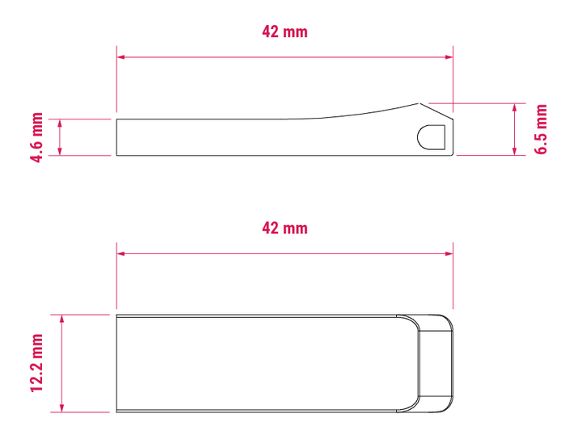

Flash drive dimensions
The following image depicts the approximate physical dimensions of the Flash Drive in millimetres (mm). The Flash Drive is approximately 42 mm × 12.2 mm. At its thickest, the Flash Drive is approximately 6.5 mm high; at its thinnest (the USB end), the Flash Drive is approximately 4.6 mm.

Figure 1. Mechanical diagram of the Flash Drive; all measurements are approximate and in millimetres (mm); the dimensions shown are subject to change and not to be used for production purposes